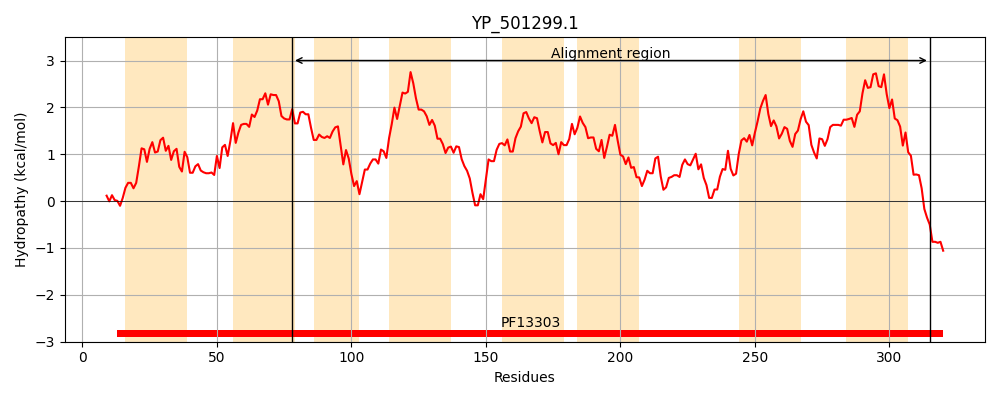
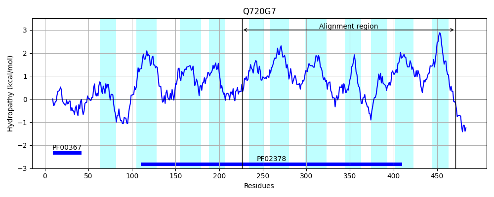
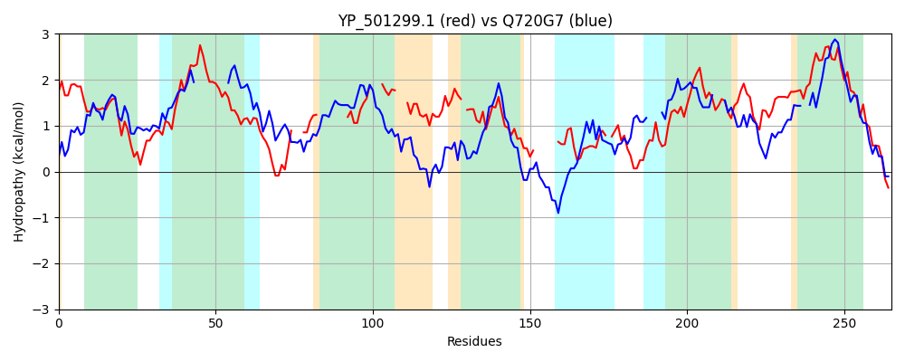

Hit Accession: Q720G7
Hit TCID: 4.A.1.2.13
Hit Description: gnl|BL_ORD_ID|15192 gnl|TC-DB|Q720G7|4.A.1.2.13 PTS system, trehalose-specific, IIBC component OS=Listeria monocytogenes serotype 4b (strain F2365) GN=treB PE=4 SV=1
Mach Len: 265
e:0.000000
Query TMS Count : 8
Hit TMS Count: 11
TMS-Overlap Score: 5.850000
Predicted Substrates:CHEBI:10202;alpha,alpha-trehalose
BLAST Alignment:
Score: 120 , Bit scores: 50 bits, E-value: 4.3e-07, Alignment length: 265, Percentage identity: 24
Query: 78 VGLVLHDFKLLPAFIAAYGVAFLIKWIEKKVPEGLDLIVVILFAPAIAFGLASIITPGVLATLKQIGSAVTAVGD---NNPYA---------LAVILGLV---IPVTG---MTPLSSMVLTSLLGLTGV-PMAIGALTCTGSSFVNLILFRK-------LNIGGPSKAFAVCIEP-LTQIDLIAQYPVQLYGTNALIGVVNACIVTFSGLVIGVKGMATPIAGAIVLFGFNNAVTSIVTIATVIIVSIVLAYIIGTLINKFNLMN 315
V ++ + +++PA +A + +A+L W+ K +P + +I V FA + P VLA +G +GD N YA A + G + + VTG MT + L S G T + PM + GS+ + +I + ++I + EP + I+L YP A+IG A +V+ S GV + + G + N ++ A ++++IV+ +I+ L K+N++N
Sbjct: 226 VQMIGYQAQVIPAIMAGFLLAYLEIWLRKFIPNAISMIFVPFFA----------LVPTVLAAHVILGPIGWKIGDAISNVVYAGLTGGLSWLFAALFGFLYAPLVVTGLHHMTNAIDLQLMSQFGGTNLWPMIALSNIAQGSAVLAIIFLHRGNEKEEQVSIPATISCYLGVTEPAMFGINLKYLYPF----VAAMIGSAIAAVVSVSS---GVMANSIGVGGLPGILSINPKYYAV--FAVCMLITIVVPFILTVLFRKYNILN 471 | Protein Hydropathy Plots: |
|---|
|  |  |
Pairwise Alignment-Hydropathy Plot:
|
|---|
|  |